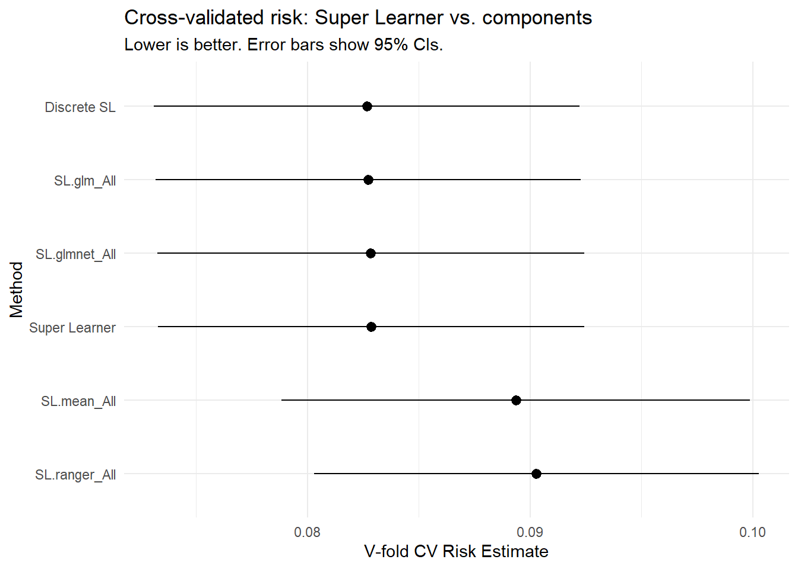

8Chapter 2.5: Super Learner — Ensemble Machine Learning for Causal Inference
9 Chapter 2.5: Super Learner — Ensemble Machine Learning for Causal Inference
Flexible prediction to strengthen causal effect estimation
In the previous chapters you learned to estimate causal effects using g-computation, IPTW, AIPW, and TMLE. Every one of these estimators depends on nuisance functions — the outcome regression \(E[Y \mid A, W]\) or the treatment mechanism \(P(A = 1 \mid W)\) — and if those models are wrong, even the cleverest causal estimator can be biased.
So far we have used simple logistic regressions for these nuisance functions. That is fine when the true relationships are approximately linear on the logit scale, but dangerous when they are not. In real data, relationships are often nonlinear, involve interactions, and depend on functional forms we cannot guess in advance.
Rather than gambling on a single model, we can stack many candidate learners and let the data decide how to combine them. This is what Super Learner does.
Why This Chapter Matters for Causal Inference
In causal inference we rarely care about prediction for its own sake. But the quality of our nuisance function estimates directly determines the quality of our causal effect estimates. A poorly estimated propensity score produces unstable IPTW weights. A misspecified outcome regression biases g-computation. Super Learner is the standard tool for making these nuisance estimates as good as possible, and it is the engine that powers TMLE in modern practice.
By the end of this chapter you will be able to:
Explain the intuition behind ensemble learning and model stacking
Understand how cross-validation protects against overfitting in ensembles
Hand-code a Super Learner from scratch in R, so you understand every moving part
Use the SuperLearner package for the same task and compare
Choose appropriate loss functions for different nuisance estimation problems
Customize the learner library and tune hyperparameters
Evaluate Super Learner performance with CV.SuperLearner
Integrate Super Learner into TMLE and other causal estimators
10 1. Why Not Just Pick the Best Single Model?
Suppose you are estimating the propensity score \(e(W) = P(A = 1 \mid W)\) in a pharmaco-epidemiologic study. You might consider:
Logistic regression (glm)
LASSO (glmnet)
Random forest (ranger)
Gradient-boosted trees (xgboost)
Multivariate adaptive regression splines (earth)
Which one should you choose? Each has strengths and weaknesses:
Learner
Strengths
Weaknesses
GLM
Interpretable, fast, familiar
Cannot capture nonlinearity or interactions unless you specify them
In practice, no single algorithm dominates across all datasets and all problems. The best algorithm depends on the true data-generating process, which is unknown.
The Oracle Selector
Imagine an oracle who knows the true data-generating process and can tell you which algorithm will perform best. You would always pick the oracle’s choice. The discrete Super Learner mimics this: it selects whichever candidate algorithm has the lowest cross-validated risk. The continuous Super Learner goes further — it finds the optimal weighted combination of all candidates, which is guaranteed to perform at least as well as the oracle selector asymptotically.
This guarantee is formalized as an oracle inequality(van2007super?): the Super Learner’s risk converges to the risk of the best possible combination of candidates in the library, at a rate that depends on the number of candidates (not the sample size). In plain language: you pay almost no price for including many diverse learners in your library.
11 2. How Super Learner Works
Super Learner is an implementation of stacked generalization (stacking), adapted for statistical estimation. Here is the algorithm:
The Super Learner Algorithm
Input: Data \((Y_i, X_i)\) for \(i = 1, \ldots, n\); a library of \(K\) candidate learners; a loss function \(L\); number of folds \(V\).
Split the data into \(V\) folds of roughly equal size.
For each fold\(v = 1, \ldots, V\):
Define the training set as all observations not in fold \(v\), and the validation set as fold \(v\).
Fit each of the \(K\) candidate learners on the training set.
Generate predictions for every observation in the validation set from each fitted learner.
Assemble cross-validated predictions. After cycling through all folds, every observation has a prediction from each learner (obtained when that observation was in the validation set). Stack these into an \(n \times K\) matrix \(\mathbf{Z}\).
Fit the metalearner. Regress the outcome \(Y\) on the columns of \(\mathbf{Z}\) to find the optimal combination weights \(\hat{\alpha}_1, \ldots, \hat{\alpha}_K\) that minimize the chosen loss function. Common metalearners include non-negative least squares (NNLS) and log-likelihood-based methods.
Refit on full data. Fit each candidate learner on the entire dataset to obtain full-data predictions.
Combine. The Super Learner prediction for a new observation is \(\hat{Y}_{SL} = \sum_{k=1}^{K} \hat{\alpha}_k \hat{f}_k(X)\), where \(\hat{f}_k\) is the \(k\)-th learner refit on the full data.
The key insight is that Step 3 uses honest, out-of-fold predictions. This prevents any learner from getting credit for overfitting — a learner that memorizes the training data will make poor validation predictions and receive low weight in Step 4.
12 3. Simulated Data
We use a dataset where the true outcome is a nonlinear function of covariates with interactions, so that simple GLMs will struggle. This mirrors real-world settings where nuisance functions have complex forms.
library(tidyverse)
Warning: package 'ggplot2' was built under R version 4.4.3
Warning: package 'stringr' was built under R version 4.4.3
── Attaching core tidyverse packages ──────────────────────── tidyverse 2.0.0 ──
✔ dplyr 1.1.4 ✔ readr 2.1.5
✔ forcats 1.0.0 ✔ stringr 1.6.0
✔ ggplot2 4.0.2 ✔ tibble 3.2.1
✔ lubridate 1.9.3 ✔ tidyr 1.3.1
✔ purrr 1.0.2
── Conflicts ────────────────────────────────────────── tidyverse_conflicts() ──
✖ dplyr::filter() masks stats::filter()
✖ dplyr::lag() masks stats::lag()
ℹ Use the conflicted package (<http://conflicted.r-lib.org/>) to force all conflicts to become errors
Let’s verify the nonlinearity is real by comparing a simple GLM to the truth.
glm_fit <-glm(y ~ age + bmi + sbp + smoker + cvd, family = binomial, data = dat)dat <- dat %>%mutate(p_true =plogis(mu_true),p_glm =predict(glm_fit, type ="response") )# How well does GLM approximate the truth?dat %>%summarize(mse_glm =mean((p_true - p_glm)^2),cor_glm =cor(p_true, p_glm) )
The GLM captures the broad trend but misses the nonlinear and interaction terms. This is exactly the kind of misspecification that damages causal estimators.
13 4. Hand-Coding Super Learner from Scratch
Before using any package, let’s implement Super Learner ourselves. This makes the algorithm completely transparent.
13.1 4.1 Define candidate learners
Each learner is a function that takes training data and returns a fitted model, plus a predict method. We wrap four algorithms in a consistent interface.
# Learner 1: Simple logistic regression (main terms only)fit_glm <-function(Y_train, X_train) { df <-as.data.frame(X_train) df$Y <- Y_trainglm(Y ~ ., family = binomial, data = df)}predict_glm <-function(model, X_new) {predict(model, newdata =as.data.frame(X_new), type ="response")}# Learner 2: Intercept-only model (benchmark)fit_mean <-function(Y_train, X_train) {list(p =mean(Y_train))}predict_mean <-function(model, X_new) {rep(model$p, nrow(X_new))}# Learner 3: LASSO via glmnetlibrary(glmnet)fit_lasso <-function(Y_train, X_train) {cv.glmnet(as.matrix(X_train), Y_train,family ="binomial", alpha =1, nfolds =5)}predict_lasso <-function(model, X_new) {as.numeric(predict(model, newx =as.matrix(X_new),s ="lambda.min", type ="response"))}# Learner 4: Random forest via rangerlibrary(ranger)fit_rf <-function(Y_train, X_train) { df <-as.data.frame(X_train) df$Y <-factor(Y_train)ranger(Y ~ ., data = df, probability =TRUE, num.trees =500)}predict_rf <-function(model, X_new) {predict(model, data =as.data.frame(X_new))$predictions[, "1"]}
13.2 4.2 Create cross-validation folds
V <-10# number of foldsfold_ids <-sample(rep(1:V, length.out = n))table(fold_ids)
Every prediction in the matrix \(\mathbf{Z}\) was made when the corresponding observation was held out of training. This is critical. If we had used in-sample predictions, a flexible learner like random forest would appear artificially good (because it can memorize the training data). By using honest out-of-fold predictions, we get a fair comparison of how each learner generalizes.
13.4 4.4 Evaluate each learner’s cross-validated risk
Before combining, let’s see how each individual learner performs.
Lower risk = better predictions. The Brier score (MSE for binary outcomes) ranges from 0 (perfect) to 0.25 (useless, equivalent to predicting 0.5 for everyone). Log-loss penalizes confident wrong predictions more heavily, making it the preferred metric when well-calibrated probabilities matter — which is exactly our situation in causal inference, where we need accurate estimates of \(P(A = 1 \mid W)\) and \(E[Y \mid A, W]\).
13.5 4.5 Fit the metalearner (non-negative least squares)
The metalearner finds the optimal weighted combination of the candidates. We use non-negative least squares (NNLS): minimize \(\sum_i (Y_i - \sum_k \alpha_k Z_{ik})^2\) subject to \(\alpha_k \geq 0\).
The non-negativity constraint ensures that no learner gets a negative weight (which would mean anti-correlating with the outcome — hard to interpret and unstable in practice).
library(nnls)nnls_fit <-nnls(Z, Y)alpha_raw <-coef(nnls_fit)# Normalize so weights sum to 1alpha <- alpha_raw /sum(alpha_raw)names(alpha) <-colnames(Z)round(alpha, 4)
GLM Mean LASSO RF
0.9614 0.0000 0.0000 0.0386
These are the Super Learner weights. Each weight tells you how much the ensemble relies on that learner.
13.6 4.6 Refit on full data and form the ensemble
# Refit each learner on the full datasetfull_models <-lapply(learners, function(l) l$fit(Y, W))# Get full-data predictions from each learnerfull_preds <-sapply(seq_along(learners), function(k) { learners[[k]]$predict(full_models[[k]], W)})colnames(full_preds) <-colnames(Z)# Super Learner predictions: weighted combinationsl_predictions <- full_preds %*% alphahead(sl_predictions)
Notice that the Super Learner’s cross-validated risk is at least as good as (and typically better than) the best individual learner. This is the oracle inequality at work. By optimally combining learners, Super Learner can exploit the strengths of each algorithm while hedging against any single algorithm’s weaknesses. You pay essentially no penalty for including “bad” learners in the library — they simply receive near-zero weight.
14 5. Understanding the Metalearner
The metalearner is the “glue” that combines candidates. Different metalearners suit different problems.
14.1 5.1 Non-negative least squares (NNLS)
What we used above. Minimizes squared error with non-negative weights. This is the default in the SuperLearner package for continuous and binary outcomes with MSE loss.
This places greater emphasis on calibration — exactly what we want when the predictions feed into propensity scores or outcome regressions for causal inference.
14.3 5.3 Which metalearner should I choose?
Outcome type
Causal role
Recommended metalearner
Continuous
Outcome regression \(E[Y \mid A, W]\)
NNLS (MSE)
Binary
Outcome regression \(E[Y \mid A, W]\)
Log-likelihood
Binary
Propensity score \(P(A \mid W)\)
Log-likelihood
Binary
Discrimination / screening
AUC-based
Metalearner Choice Matters for Causal Inference
When Super Learner predictions feed into TMLE or AIPW, we need well-calibrated probabilities, not just good rankings. Log-likelihood metalearners penalize overconfident wrong predictions (e.g., predicting 0.99 when the truth is 0), which keeps the propensity scores and outcome predictions from behaving badly in downstream causal estimation. AUC-based metalearners optimize rankings but may produce poorly calibrated probabilities — use them for classification, not for nuisance estimation in causal analyses.
15 6. Using the SuperLearner Package
Now that you understand every step, let’s see how the SuperLearner package does the same thing in a few lines.
library(SuperLearner)
Loading required package: gam
Loading required package: splines
Loading required package: foreach
Attaching package: 'foreach'
The following objects are masked from 'package:purrr':
accumulate, when
The weights may differ slightly due to different random seeds for fold assignments and minor implementation details, but the pattern should be similar.
Key Package Outputs
sl_fit$cvRisk: cross-validated risk for each candidate learner
sl_fit$coef: metalearner weights
sl_fit$SL.predict: ensemble predictions for the training data
sl_fit$library.predict: predictions from each individual candidate (refit on full data)
sl_fit$fitLibrary: the fitted model objects for each candidate
16 7. Choosing a Loss Function: MSE vs. Log-Likelihood vs. AUC
Super Learner allows different loss functions, which define what “best prediction” means.
16.1 7.1 Mean squared error (Brier score)
Default for method = "method.NNLS"
Appropriate for continuous outcomes
Also valid for binary outcomes (Brier score), but does not emphasize calibration as strongly as log-likelihood
The log-likelihood metalearner is almost always the right choice for binary nuisance functions in causal inference, because well-calibrated probabilities are essential for valid IPTW weights and TMLE fluctuation steps.
17 8. Customizing the Learner Library
17.1 8.1 What learners are available?
# List all built-in SL wrapperslistWrappers("SL")
All prediction algorithm wrappers in SuperLearner:
17.2 8.2 Creating custom learners with different tuning parameters
A powerful feature of Super Learner is that you can include multiple versions of the same algorithm with different tuning parameters. Rather than tuning each learner separately, you let the metalearner figure out which version is best.
Start diverse. Include at least one parametric model (GLM), one regularized model (LASSO/elastic net), one tree-based model (random forest or xgboost), and one nonparametric smoother (MARS/earth or GAM).
Include a simple benchmark. Always include SL.mean (intercept-only) and SL.glm. If these get most of the weight, your covariates may not be very predictive.
Vary tuning parameters. Include 2–3 versions of flexible learners with different hyperparameters. This is computationally cheaper than formal grid search and lets the metalearner handle selection.
Don’t worry about including “bad” learners. They get zero weight. The oracle inequality guarantees you pay almost no price for library size.
17.3 8.3 Using screening wrappers
For high-dimensional data, you can screen variables before fitting a learner. This is especially useful for algorithms that scale poorly with many covariates.
# Screen top 3 variables by correlation before fitting GLMscreen.corP <-function(Y, X, family, ...) { cors <-abs(apply(X, 2, cor, y = Y))rank(cors) >= (ncol(X) -2)}# Use list format to pair screener with learnerSL_lib_screen <-list(c("SL.glm", "All"),c("SL.glm", "screen.corP"),c("SL.ranger", "All"),c("SL.glmnet", "All"))
18 9. Evaluating Super Learner: CV.SuperLearner
How do we know if Super Learner is actually better than its best component? The CV.SuperLearner function adds an outer layer of cross-validation to produce an honest estimate of Super Learner’s performance.
Call:
CV.SuperLearner(Y = Y, X = X_df, V = 5, family = binomial(), SL.library = SL_lib,
method = "method.NNLS")
Risk is based on: Mean Squared Error
All risk estimates are based on V = 5
Algorithm Ave se Min Max
Super Learner 0.082858 0.0048823 0.065386 0.096140
Discrete SL 0.082664 0.0048750 0.065163 0.095573
SL.glm_All 0.082718 0.0048747 0.065661 0.095573
SL.mean_All 0.089359 0.0053661 0.066414 0.104229
SL.glmnet_All 0.082841 0.0048922 0.065163 0.095710
SL.ranger_All 0.090285 0.0050973 0.071042 0.108019
plot(cv_sl) +theme_minimal() +labs(title ="Cross-validated risk: Super Learner vs. components",subtitle ="Lower is better. Error bars show 95% CIs." )
Warning: `aes_string()` was deprecated in ggplot2 3.0.0.
ℹ Please use tidy evaluation idioms with `aes()`.
ℹ See also `vignette("ggplot2-in-packages")` for more information.
ℹ The deprecated feature was likely used in the SuperLearner package.
Please report the issue to the authors.

Interpreting the CV.SuperLearner Plot
The plot shows cross-validated risk estimates with 95% confidence intervals for:
Each individual candidate learner
The discrete Super Learner (selects the single best learner)
The Super Learner (optimal weighted combination)
If the Super Learner’s confidence interval overlaps substantially with the best individual learner, the ensemble offers modest improvement. If it is clearly lower, the ensemble is doing meaningful work by combining learners.
Either way, using Super Learner is a safe default: it performs at least as well as the best candidate, and often better.
19 10. Super Learner in the Causal Inference Pipeline
We have been building prediction tools. Now let’s connect them to the estimators from previous chapters. Here is a complete worked example that shows how Super Learner integrates into a TMLE analysis.
# A tibble: 2 × 6
Method Estimate SE CI_lower CI_upper Truth
<chr> <dbl> <dbl> <dbl> <dbl> <dbl>
1 G-computation (SL) 0.0591 NA NA NA 0.0642
2 TMLE (SL) 0.0594 0.0156 0.0289 0.09 0.0642
Why Super Learner + TMLE Is the Modern Default
This pipeline illustrates the recommended approach for modern causal inference:
Super Learner for nuisance functions — reduces model misspecification risk
TMLE for the causal estimate — provides double robustness and valid inference
EIC-based standard errors — asymptotically valid even with machine learning
This is exactly what the tmle and tmle3 packages automate. But understanding the hand-coded version ensures you know what happens under the hood.
20 11. Using the tmle Package with Super Learner
In practice, you will often use the tmle package, which handles the full pipeline internally. Here we show the concise version of the analysis from Section 10.
The tmle package does everything we did by hand in Sections 10.2–10.5: it fits Super Learner for both nuisance functions, performs the TMLE fluctuation step, and computes EIC-based inference. The hand-coded version from this chapter shows you exactly what those four lines are doing.
21 12. Practical Recommendations
A Recommended Super Learner Library for Pharmacoepidemiology
For a typical pharmacoepidemiologic analysis with binary treatment and binary outcome:
SL_lib <-c("SL.glm", # main-terms logistic regression"SL.glm.interaction", # all pairwise interactions"SL.earth", # MARS (automatic interaction detection)"SL.glmnet", # LASSO (variable selection)"SL.ranger", # random forest (complex interactions)"SL.mean"# intercept-only benchmark)
This library balances interpretable models (GLM, LASSO) with flexible nonparametric learners (earth, ranger), plus a simple benchmark. It works well as a starting point for most causal analyses.
For larger datasets (n > 10,000) or high-dimensional covariates, consider adding:
SL.xgboost — gradient boosted trees
SL.nnet — neural networks
Multiple tuned variants of ranger and xgboost with different hyperparameters
21.0.1 Practical tips
Always include a simple benchmark.SL.mean and SL.glm should always be in the library. If the ensemble gives all weight to SL.mean, your covariates are not predictive — which may indicate a problem with your variable set or study design.
Match the loss function to the problem. Use method.NNloglik for binary nuisance functions. Use method.NNLS for continuous outcomes.
Bound propensity scores. After fitting Super Learner for \(P(A \mid W)\), truncate predictions away from 0 and 1 (e.g., to \([0.01, 0.99]\)) to avoid extreme weights in IPTW or TMLE.
Inspect the weights. If one learner gets all the weight, your library may lack diversity. If the mean-only model gets substantial weight, the signal may be weak.
Watch computation time. Super Learner with \(V = 10\) folds and \(K\) learners requires fitting \(V \times K\) models. With large datasets and slow learners, this can be hours of computation. Start with a small library and expand as needed.
Use Super Learner for nuisance functions, not for the causal effect. Never use Super Learner to directly estimate the ATE. Use it to estimate \(Q\) and \(g\), then feed these into TMLE, AIPW, or another causal estimator.
The HIV antiretroviral therapy cohort illustrates why flexible nuisance estimation matters in practice. In the point-treatment simplification, we use a single baseline snapshot per patient with treatment ever_haart, outcome died, and covariates age, sex, and cd4_sqrt_baseline.
Super Learner is valuable here because the relationship between baseline CD4 count and treatment initiation is unlikely to be linear on the logit scale. Clinicians may use threshold-based decision rules (for example, initiating HAART when CD4 drops below a clinical cutoff), and interactions between age and CD4 may influence both treatment decisions and mortality risk. A main-terms logistic regression cannot capture these patterns, but tree-based learners like SL.ranger and spline-based learners like SL.earth can detect them automatically.
source("_data/load-haart-cohort.R")glimpse(haart_baseline)# Super Learner can be used for both nuisance models:# 1. Treatment model: P(ever_haart = 1 | age, sex, cd4_sqrt_baseline)# 2. Outcome model: E[died | ever_haart, age, sex, cd4_sqrt_baseline]## A suitable library for this cohort:sl_lib <-c("SL.glm", "SL.earth", "SL.ranger", "SL.glmnet", "SL.mean")## earth and ranger can detect nonlinear CD4-treatment thresholds# and age-by-CD4 interactions without manual specification.
By letting Super Learner select the best combination of learners, we reduce the risk that a misspecified parametric model biases the downstream TMLE estimate for the effect of HAART on mortality. The ensemble weights also serve as a diagnostic: if SL.glm receives most of the weight, the relationships may be approximately linear; if tree-based or spline-based learners dominate, there is likely meaningful nonlinearity that a simple model would miss.
23 13. Summary
Key Takeaways
Super Learner combines multiple algorithms using cross-validation and a metalearner to produce an ensemble with an oracle guarantee: it performs nearly as well as the best possible combination of candidates
The key mechanism is honest cross-validated predictions — each learner’s quality is assessed on held-out data, preventing overfitting from inflating any learner’s contribution
For causal inference, use log-likelihood loss for binary nuisance functions and MSE for continuous outcomes
Super Learner is the standard tool for estimating nuisance functions (\(E[Y \mid A, W]\) and \(P(A \mid W)\)) in modern TMLE and AIPW analyses
You can (and should) include many diverse learners in the library — the oracle inequality guarantees that “bad” learners receive near-zero weight and do not harm the ensemble
23.1 Check your understanding
Q1. Why does Super Learner use cross-validated predictions rather than in-sample predictions to determine the metalearner weights?
If we used in-sample predictions, a highly flexible learner (like a deep random forest or neural network) could achieve near-perfect training accuracy by memorizing the data. The metalearner would then give it all the weight, and the ensemble would overfit badly. Cross-validated predictions provide an honest assessment of each learner’s generalization performance. A learner that memorizes training data will predict poorly on the held-out fold, and the metalearner will down-weight it accordingly. This is the fundamental mechanism that makes Super Learner robust to overfitting.
Q2. You run Super Learner for a propensity score model and the intercept-only learner (SL.mean) receives the largest weight. What does this suggest?
This suggests that the covariates in your model are not very predictive of treatment assignment. In other words, after accounting for the covariates you included, treatment assignment appears nearly random — or at least, the predictive signal is too weak for any algorithm to exploit. This could mean: (1) treatment really is nearly randomized given your covariates (good news for causal inference), (2) important confounders are missing from your model (dangerous — you may have unmeasured confounding), or (3) the covariates need better pre-processing (e.g., you included age as a categorical variable when it should be continuous). You should investigate which interpretation is correct before proceeding with your causal analysis.
Q3. A colleague argues that you should just use xgboost for the propensity score because “it always wins Kaggle competitions.” How would you respond?
While xgboost is a powerful algorithm, no single learner dominates in all settings. “Winning Kaggle” requires optimizing prediction accuracy for a specific dataset with specific tuning — which is exactly what Super Learner automates. If xgboost truly is the best algorithm for your data, Super Learner will discover this and give it the largest weight. But if your data has a simpler structure where logistic regression or LASSO performs comparably, Super Learner will use those instead (or combine them). Additionally, for causal inference we care about calibrated probabilities, not just ranking accuracy. An out-of-the-box xgboost model optimized for classification accuracy may produce poorly calibrated propensity scores that create extreme IPTW weights. Super Learner with a log-likelihood metalearner directly optimizes calibration.
Q4. In the hand-coded example, we normalized the NNLS weights to sum to 1. Is this necessary? What if they don’t sum to 1?
Normalization is not strictly required by the theory, but it is standard practice. Without normalization, the NNLS weights are the raw coefficients from the constrained regression, and the ensemble predictions may systematically over- or under-predict. Normalizing to sum to 1 makes the ensemble a convex combination of the candidates, which ensures that the ensemble’s predictions stay in the same range as the individual learners’ predictions. For binary outcomes, this helps keep predicted probabilities in \([0, 1]\). The SuperLearner package normalizes by default with method.NNLS.
23.2 What comes next
This chapter equipped you with the core prediction engine that powers modern causal estimators. In the next part of the handbook, we move beyond point-treatment analyses to tackle effect modification and heterogeneous treatment effects, where Super Learner continues to play a central role in estimating nuisance functions across subgroups.
---title: "Chapter 2.5: Super Learner — Ensemble Machine Learning for Causal Inference"format: html---# Chapter 2.5: Super Learner — Ensemble Machine Learning for Causal Inference*Flexible prediction to strengthen causal effect estimation*In the previous chapters you learned to estimate causal effects using g-computation, IPTW, AIPW, and TMLE. Every one of these estimators depends on **nuisance functions** — the outcome regression $E[Y \mid A, W]$ or the treatment mechanism $P(A = 1 \mid W)$ — and if those models are wrong, even the cleverest causal estimator can be biased.So far we have used simple logistic regressions for these nuisance functions. That is fine when the true relationships are approximately linear on the logit scale, but dangerous when they are not. In real data, relationships are often nonlinear, involve interactions, and depend on functional forms we cannot guess in advance.Rather than gambling on a single model, we can **stack** many candidate learners and let the data decide how to combine them. This is what **Super Learner** does.:::{.callout-tip}## Why This Chapter Matters for Causal InferenceIn causal inference we rarely care about prediction for its own sake. But the quality of our nuisance function estimates *directly determines* the quality of our causal effect estimates. A poorly estimated propensity score produces unstable IPTW weights. A misspecified outcome regression biases g-computation. Super Learner is the standard tool for making these nuisance estimates as good as possible, and it is the engine that powers TMLE in modern practice.:::By the end of this chapter you will be able to:- Explain the intuition behind ensemble learning and model stacking- Understand how cross-validation protects against overfitting in ensembles- **Hand-code a Super Learner from scratch** in R, so you understand every moving part- Use the `SuperLearner` package for the same task and compare- Choose appropriate loss functions for different nuisance estimation problems- Customize the learner library and tune hyperparameters- Evaluate Super Learner performance with `CV.SuperLearner`- Integrate Super Learner into TMLE and other causal estimators---# 1. Why Not Just Pick the Best Single Model?Suppose you are estimating the propensity score $e(W) = P(A = 1 \mid W)$ in a pharmaco-epidemiologic study. You might consider:- Logistic regression (`glm`)- LASSO (`glmnet`)- Random forest (`ranger`)- Gradient-boosted trees (`xgboost`)- Multivariate adaptive regression splines (`earth`)Which one should you choose? Each has strengths and weaknesses:| Learner | Strengths | Weaknesses ||---------|-----------|------------|| GLM | Interpretable, fast, familiar | Cannot capture nonlinearity or interactions unless you specify them || LASSO | Variable selection, handles high-dimensional covariates | Assumes linearity (on the link scale) || Random forest | Captures complex interactions, robust to outliers | Can overfit with small samples, poor extrapolation || XGBoost | State-of-the-art prediction, handles missing data | Many tuning parameters, opaque || MARS | Automatic interaction detection, interpretable basis | Limited flexibility compared to tree ensembles |In practice, **no single algorithm dominates across all datasets and all problems**. The best algorithm depends on the true data-generating process, which is unknown.:::{.callout-note}## The Oracle SelectorImagine an oracle who knows the true data-generating process and can tell you which algorithm will perform best. You would always pick the oracle's choice. The **discrete Super Learner** mimics this: it selects whichever candidate algorithm has the lowest cross-validated risk. The **continuous Super Learner** goes further — it finds the *optimal weighted combination* of all candidates, which is guaranteed to perform at least as well as the oracle selector asymptotically.:::This guarantee is formalized as an **oracle inequality** [@van2007super]: the Super Learner's risk converges to the risk of the best possible combination of candidates in the library, at a rate that depends on the number of candidates (not the sample size). In plain language: **you pay almost no price for including many diverse learners in your library**.---# 2. How Super Learner WorksSuper Learner is an implementation of **stacked generalization** (stacking), adapted for statistical estimation. Here is the algorithm::::{.callout-note}## The Super Learner Algorithm**Input:** Data $(Y_i, X_i)$ for $i = 1, \ldots, n$; a library of $K$ candidate learners; a loss function $L$; number of folds $V$.1. **Split** the data into $V$ folds of roughly equal size.2. **For each fold** $v = 1, \ldots, V$: a. Define the *training set* as all observations *not* in fold $v$, and the *validation set* as fold $v$. b. Fit each of the $K$ candidate learners on the training set. c. Generate predictions for every observation in the validation set from each fitted learner.3. **Assemble cross-validated predictions.** After cycling through all folds, every observation has a prediction from each learner (obtained when that observation was in the validation set). Stack these into an $n \times K$ matrix $\mathbf{Z}$.4. **Fit the metalearner.** Regress the outcome $Y$ on the columns of $\mathbf{Z}$ to find the optimal combination weights $\hat{\alpha}_1, \ldots, \hat{\alpha}_K$ that minimize the chosen loss function. Common metalearners include non-negative least squares (NNLS) and log-likelihood-based methods.5. **Refit on full data.** Fit each candidate learner on the *entire* dataset to obtain full-data predictions.6. **Combine.** The Super Learner prediction for a new observation is $\hat{Y}_{SL} = \sum_{k=1}^{K} \hat{\alpha}_k \hat{f}_k(X)$, where $\hat{f}_k$ is the $k$-th learner refit on the full data.:::The key insight is that **Step 3 uses honest, out-of-fold predictions**. This prevents any learner from getting credit for overfitting — a learner that memorizes the training data will make poor validation predictions and receive low weight in Step 4.---# 3. Simulated DataWe use a dataset where the true outcome is a nonlinear function of covariates with interactions, so that simple GLMs will struggle. This mirrors real-world settings where nuisance functions have complex forms.```{r}library(tidyverse)set.seed(2026)n <-2000dat <-tibble(id =1:n,age =rnorm(n, 65, 10),bmi =rnorm(n, 28, 5),sbp =rnorm(n, 135, 20),smoker =rbinom(n, 1, 0.25),cvd =rbinom(n, 1, plogis(-2+0.04* (age -60) +0.3* smoker)))# True outcome: nonlinear with interactionsdat <- dat %>%mutate(# Complex nuisance function (imagine this is E[Y | W])mu_true =-3+0.05* (age -60) +0.03* bmi +0.5* cvd +0.3* smoker +0.02* (age -60) * cvd +# interactionsin(sbp /30) +# nonlinearity0.001* (age -60)^2, # quadraticy =rbinom(n, 1, plogis(mu_true)) )# Covariates matrix for modelingW <- dat %>%select(age, bmi, sbp, smoker, cvd)Y <- dat$y```Let's verify the nonlinearity is real by comparing a simple GLM to the truth.```{r}glm_fit <-glm(y ~ age + bmi + sbp + smoker + cvd, family = binomial, data = dat)dat <- dat %>%mutate(p_true =plogis(mu_true),p_glm =predict(glm_fit, type ="response") )# How well does GLM approximate the truth?dat %>%summarize(mse_glm =mean((p_true - p_glm)^2),cor_glm =cor(p_true, p_glm) )```The GLM captures the broad trend but misses the nonlinear and interaction terms. This is exactly the kind of misspecification that damages causal estimators.---# 4. Hand-Coding Super Learner from ScratchBefore using any package, let's implement Super Learner ourselves. This makes the algorithm completely transparent.## 4.1 Define candidate learnersEach learner is a function that takes training data and returns a fitted model, plus a predict method. We wrap four algorithms in a consistent interface.```{r}#| message: false#| warning: false# Learner 1: Simple logistic regression (main terms only)fit_glm <-function(Y_train, X_train) { df <-as.data.frame(X_train) df$Y <- Y_trainglm(Y ~ ., family = binomial, data = df)}predict_glm <-function(model, X_new) {predict(model, newdata =as.data.frame(X_new), type ="response")}# Learner 2: Intercept-only model (benchmark)fit_mean <-function(Y_train, X_train) {list(p =mean(Y_train))}predict_mean <-function(model, X_new) {rep(model$p, nrow(X_new))}# Learner 3: LASSO via glmnetlibrary(glmnet)fit_lasso <-function(Y_train, X_train) {cv.glmnet(as.matrix(X_train), Y_train,family ="binomial", alpha =1, nfolds =5)}predict_lasso <-function(model, X_new) {as.numeric(predict(model, newx =as.matrix(X_new),s ="lambda.min", type ="response"))}# Learner 4: Random forest via rangerlibrary(ranger)fit_rf <-function(Y_train, X_train) { df <-as.data.frame(X_train) df$Y <-factor(Y_train)ranger(Y ~ ., data = df, probability =TRUE, num.trees =500)}predict_rf <-function(model, X_new) {predict(model, data =as.data.frame(X_new))$predictions[, "1"]}```## 4.2 Create cross-validation folds```{r}V <-10# number of foldsfold_ids <-sample(rep(1:V, length.out = n))table(fold_ids)```## 4.3 Generate cross-validated predictionsThis is the core of the algorithm: for each fold, train on the remaining data and predict on the held-out fold.```{r}# Collect learner infolearners <-list(list(name ="GLM", fit = fit_glm, predict = predict_glm),list(name ="Mean", fit = fit_mean, predict = predict_mean),list(name ="LASSO", fit = fit_lasso, predict = predict_lasso),list(name ="RF", fit = fit_rf, predict = predict_rf))K <-length(learners)# Matrix to hold cross-validated predictions: n x KZ <-matrix(NA, nrow = n, ncol = K)colnames(Z) <-sapply(learners, \(l) l$name)for (v in1:V) {# Define training and validation sets train_idx <- fold_ids != v valid_idx <- fold_ids == v Y_train <- Y[train_idx] X_train <- W[train_idx, ] X_valid <- W[valid_idx, ]for (k inseq_along(learners)) {# Fit on training data model_k <- learners[[k]]$fit(Y_train, X_train)# Predict on validation data Z[valid_idx, k] <- learners[[k]]$predict(model_k, X_valid) }}```Let's inspect the cross-validated predictions.```{r}head(Z)```:::{.callout-important}## Why Cross-Validated Predictions MatterEvery prediction in the matrix $\mathbf{Z}$ was made when the corresponding observation was *held out* of training. This is critical. If we had used in-sample predictions, a flexible learner like random forest would appear artificially good (because it can memorize the training data). By using honest out-of-fold predictions, we get a fair comparison of how each learner generalizes.:::## 4.4 Evaluate each learner's cross-validated riskBefore combining, let's see how each individual learner performs.```{r}# Cross-validated MSE (Brier score for binary outcomes)cv_risk <-colMeans((Y - Z)^2)cv_risk# Cross-validated log-likelihood (negative)cv_logloss <--colMeans(Y *log(pmax(Z, 1e-10)) + (1- Y) *log(pmax(1- Z, 1e-10)))cv_logloss``````{r}tibble(Learner =names(cv_risk),`CV MSE (Brier)`=round(cv_risk, 4),`CV Log-Loss`=round(cv_logloss, 4)) %>%arrange(`CV MSE (Brier)`)```:::{.callout-tip}## Interpreting Cross-Validated RiskLower risk = better predictions. The **Brier score** (MSE for binary outcomes) ranges from 0 (perfect) to 0.25 (useless, equivalent to predicting 0.5 for everyone). **Log-loss** penalizes confident wrong predictions more heavily, making it the preferred metric when well-calibrated probabilities matter — which is exactly our situation in causal inference, where we need accurate estimates of $P(A = 1 \mid W)$ and $E[Y \mid A, W]$.:::## 4.5 Fit the metalearner (non-negative least squares)The metalearner finds the optimal weighted combination of the candidates. We use **non-negative least squares (NNLS)**: minimize $\sum_i (Y_i - \sum_k \alpha_k Z_{ik})^2$ subject to $\alpha_k \geq 0$.The non-negativity constraint ensures that no learner gets a negative weight (which would mean *anti-correlating* with the outcome — hard to interpret and unstable in practice).```{r}library(nnls)nnls_fit <-nnls(Z, Y)alpha_raw <-coef(nnls_fit)# Normalize so weights sum to 1alpha <- alpha_raw /sum(alpha_raw)names(alpha) <-colnames(Z)round(alpha, 4)```These are the Super Learner weights. Each weight tells you how much the ensemble relies on that learner.## 4.6 Refit on full data and form the ensemble```{r}# Refit each learner on the full datasetfull_models <-lapply(learners, function(l) l$fit(Y, W))# Get full-data predictions from each learnerfull_preds <-sapply(seq_along(learners), function(k) { learners[[k]]$predict(full_models[[k]], W)})colnames(full_preds) <-colnames(Z)# Super Learner predictions: weighted combinationsl_predictions <- full_preds %*% alphahead(sl_predictions)```## 4.7 Compare the ensemble to individual learners```{r}# Cross-validated predictions from the SL ensemblesl_cv_preds <- Z %*% alpharesults <-tibble(Learner =c(colnames(Z), "Super Learner"),`CV MSE`=c(cv_risk, mean((Y - sl_cv_preds)^2)),`CV Log-Loss`=c( cv_logloss,-mean(Y *log(pmax(sl_cv_preds, 1e-10)) + (1- Y) *log(pmax(1- sl_cv_preds, 1e-10))) )) %>%mutate(across(where(is.numeric), \(x) round(x, 4)))results```:::{.callout-tip}## The Super Learner GuaranteeNotice that the Super Learner's cross-validated risk is at least as good as (and typically better than) the best individual learner. This is the oracle inequality at work. By optimally combining learners, Super Learner can exploit the strengths of each algorithm while hedging against any single algorithm's weaknesses. You pay essentially no penalty for including "bad" learners in the library — they simply receive near-zero weight.:::---# 5. Understanding the MetalearnerThe metalearner is the "glue" that combines candidates. Different metalearners suit different problems.## 5.1 Non-negative least squares (NNLS)What we used above. Minimizes squared error with non-negative weights. This is the default in the `SuperLearner` package for continuous and binary outcomes with MSE loss.$$\hat{\alpha} = \arg\min_{\alpha \geq 0} \sum_{i=1}^{n} \left(Y_i - \sum_{k=1}^{K} \alpha_k Z_{ik}\right)^2$$## 5.2 Log-likelihood metalearnerFor binary outcomes, we may prefer to optimize log-likelihood instead:$$\hat{\alpha} = \arg\min_{\alpha \geq 0} -\sum_{i=1}^{n} \left[ Y_i \log\left(\sum_k \alpha_k Z_{ik}\right) + (1 - Y_i) \log\left(1 - \sum_k \alpha_k Z_{ik}\right) \right]$$This places greater emphasis on calibration — exactly what we want when the predictions feed into propensity scores or outcome regressions for causal inference.## 5.3 Which metalearner should I choose?| Outcome type | Causal role | Recommended metalearner ||---|---|---|| Continuous | Outcome regression $E[Y \mid A, W]$ | NNLS (MSE) || Binary | Outcome regression $E[Y \mid A, W]$ | Log-likelihood || Binary | Propensity score $P(A \mid W)$ | Log-likelihood || Binary | Discrimination / screening | AUC-based |:::{.callout-important}## Metalearner Choice Matters for Causal InferenceWhen Super Learner predictions feed into TMLE or AIPW, we need well-calibrated *probabilities*, not just good rankings. Log-likelihood metalearners penalize overconfident wrong predictions (e.g., predicting 0.99 when the truth is 0), which keeps the propensity scores and outcome predictions from behaving badly in downstream causal estimation. AUC-based metalearners optimize rankings but may produce poorly calibrated probabilities — use them for classification, not for nuisance estimation in causal analyses.:::---# 6. Using the `SuperLearner` PackageNow that you understand every step, let's see how the `SuperLearner` package does the same thing in a few lines.```{r}library(SuperLearner)set.seed(2026)X_df <-as.data.frame(W)SL_lib <-c("SL.glm", # logistic regression"SL.mean", # intercept-only benchmark"SL.glmnet", # LASSO / elastic net"SL.ranger") # random forestsl_fit <-SuperLearner(Y = Y,X = X_df,family =binomial(),SL.library = SL_lib,method ="method.NNLS",cvControl =list(V =10L))sl_fit```Compare the package output to our hand-coded version:```{r}tibble(Learner =c("GLM", "Mean", "LASSO", "RF"),`Hand-coded weight`=round(alpha, 4),`Package weight`=round(coef(sl_fit), 4))```The weights may differ slightly due to different random seeds for fold assignments and minor implementation details, but the pattern should be similar.:::{.callout-note}## Key Package Outputs- `sl_fit$cvRisk`: cross-validated risk for each candidate learner- `sl_fit$coef`: metalearner weights- `sl_fit$SL.predict`: ensemble predictions for the training data- `sl_fit$library.predict`: predictions from each individual candidate (refit on full data)- `sl_fit$fitLibrary`: the fitted model objects for each candidate:::---# 7. Choosing a Loss Function: MSE vs. Log-Likelihood vs. AUCSuper Learner allows different **loss functions**, which define what "best prediction" means.## 7.1 Mean squared error (Brier score)- Default for `method = "method.NNLS"`- Appropriate for continuous outcomes- Also valid for binary outcomes (Brier score), but does not emphasize calibration as strongly as log-likelihood## 7.2 Negative log-likelihood (binomial deviance)- Natural choice for binary outcomes when **probability calibration** matters- Strongly penalizes confident but wrong predictions- **Recommended for nuisance functions in causal inference** (both propensity scores and binary outcome regressions)```{r}sl_loglik <-SuperLearner(Y = Y,X = X_df,family =binomial(),SL.library = SL_lib,method ="method.NNloglik",cvControl =list(V =10L))sl_loglik```## 7.3 AUC (rank loss)- Optimizes **discrimination** (ability to rank high-risk above low-risk)- Does *not* ensure calibrated probabilities- Useful for building risk scores or diagnostic classifiers, **not recommended** as the primary loss for nuisance estimation in causal inference```{r}#| eval: falselibrary(cvAUC)sl_auc <-SuperLearner(Y = Y,X = X_df,family =binomial(),SL.library = SL_lib,method ="method.AUC")```## 7.4 Practical guidance for causal inference:::{.callout-tip}## Which Loss Function for Which Nuisance Model?| Nuisance function | Outcome type | Recommended method ||---|---|---|| Outcome regression $E[Y \mid A, W]$ | Binary | `method.NNloglik` || Outcome regression $E[Y \mid A, W]$ | Continuous | `method.NNLS` || Propensity score $P(A \mid W)$ | Binary | `method.NNloglik` || Censoring model $P(C = 0 \mid A, W)$ | Binary | `method.NNloglik` |The log-likelihood metalearner is almost always the right choice for binary nuisance functions in causal inference, because well-calibrated probabilities are essential for valid IPTW weights and TMLE fluctuation steps.:::---# 8. Customizing the Learner Library## 8.1 What learners are available?```{r}# List all built-in SL wrapperslistWrappers("SL")```## 8.2 Creating custom learners with different tuning parametersA powerful feature of Super Learner is that you can include **multiple versions of the same algorithm** with different tuning parameters. Rather than tuning each learner separately, you let the metalearner figure out which version is best.```{r}# Custom random forest with different mtry valuesSL.ranger.mtry2 <-function(..., mtry =2) SL.ranger(..., mtry = mtry)SL.ranger.mtry4 <-function(..., mtry =4) SL.ranger(..., mtry = mtry)# Custom LASSO with different alpha (mixing parameter)SL.glmnet.ridge <-function(..., alpha =0) SL.glmnet(..., alpha = alpha)SL.glmnet.enet <-function(..., alpha =0.5) SL.glmnet(..., alpha = alpha)# Expanded librarySL_lib_expanded <-c("SL.glm","SL.mean","SL.earth","SL.glmnet","SL.glmnet.ridge","SL.glmnet.enet","SL.ranger","SL.ranger.mtry2","SL.ranger.mtry4")sl_expanded <-SuperLearner(Y = Y,X = X_df,family =binomial(),SL.library = SL_lib_expanded,method ="method.NNloglik",cvControl =list(V =10L))sl_expanded```:::{.callout-tip}## Library Design Principles1. **Start diverse.** Include at least one parametric model (GLM), one regularized model (LASSO/elastic net), one tree-based model (random forest or xgboost), and one nonparametric smoother (MARS/earth or GAM).2. **Include a simple benchmark.** Always include `SL.mean` (intercept-only) and `SL.glm`. If these get most of the weight, your covariates may not be very predictive.3. **Vary tuning parameters.** Include 2–3 versions of flexible learners with different hyperparameters. This is computationally cheaper than formal grid search and lets the metalearner handle selection.4. **Don't worry about including "bad" learners.** They get zero weight. The oracle inequality guarantees you pay almost no price for library size.:::## 8.3 Using screening wrappersFor high-dimensional data, you can **screen** variables before fitting a learner. This is especially useful for algorithms that scale poorly with many covariates.```{r}#| eval: false# Screen top 3 variables by correlation before fitting GLMscreen.corP <-function(Y, X, family, ...) { cors <-abs(apply(X, 2, cor, y = Y))rank(cors) >= (ncol(X) -2)}# Use list format to pair screener with learnerSL_lib_screen <-list(c("SL.glm", "All"),c("SL.glm", "screen.corP"),c("SL.ranger", "All"),c("SL.glmnet", "All"))```---# 9. Evaluating Super Learner: `CV.SuperLearner`How do we know if Super Learner is actually better than its best component? The `CV.SuperLearner` function adds an **outer layer** of cross-validation to produce an honest estimate of Super Learner's performance.```{r}set.seed(2026)cv_sl <-CV.SuperLearner(Y = Y,X = X_df,V =5,family =binomial(),SL.library = SL_lib,method ="method.NNLS")summary(cv_sl)``````{r}plot(cv_sl) +theme_minimal() +labs(title ="Cross-validated risk: Super Learner vs. components",subtitle ="Lower is better. Error bars show 95% CIs." )```:::{.callout-note}## Interpreting the CV.SuperLearner PlotThe plot shows cross-validated risk estimates with 95% confidence intervals for:- Each individual candidate learner- The **discrete Super Learner** (selects the single best learner)- The **Super Learner** (optimal weighted combination)If the Super Learner's confidence interval overlaps substantially with the best individual learner, the ensemble offers modest improvement. If it is clearly lower, the ensemble is doing meaningful work by combining learners.Either way, using Super Learner is a safe default: it performs at least as well as the best candidate, and often better.:::---# 10. Super Learner in the Causal Inference PipelineWe have been building prediction tools. Now let's connect them to the estimators from previous chapters. Here is a complete worked example that shows how Super Learner integrates into a TMLE analysis.## 10.1 Simulated treatment–outcome data```{r}set.seed(2026)n <-3000# CovariatesW_sim <-tibble(age =rnorm(n, 70, 8),bmi =rnorm(n, 27, 4),sbp =rnorm(n, 140, 18),smoker =rbinom(n, 1, 0.3),cvd =rbinom(n, 1, plogis(-1.5+0.04* (age -65) +0.4* smoker)))# Treatment model (true propensity score) — with nonlinear termsW_sim <- W_sim %>%mutate(ps_true =plogis(-1.5+0.06* (age -65) +0.02* bmi +0.5* cvd +0.3* smoker +0.01* (age -65) * cvd),A =rbinom(n, 1, ps_true) )# Outcome model (true) — with nonlinear termsW_sim <- W_sim %>%mutate(mu1_true =plogis(-2.5+0.4+0.06* (age -65) +0.03* bmi +0.6* cvd +sin(sbp /40) +0.02* (age -65) * cvd),mu0_true =plogis(-2.5+0.06* (age -65) +0.03* bmi +0.6* cvd +sin(sbp /40) +0.02* (age -65) * cvd),Y =rbinom(n, 1, ifelse(A ==1, mu1_true, mu0_true)) )# True ATEtrue_ate <-mean(W_sim$mu1_true - W_sim$mu0_true)cat("True ATE:", round(true_ate, 4), "\n")```## 10.2 Estimate nuisance functions with Super Learner```{r}X_covariates <- W_sim %>%select(age, bmi, sbp, smoker, cvd) %>%as.data.frame()X_with_A <- W_sim %>%select(age, bmi, sbp, smoker, cvd, A) %>%as.data.frame()SL_lib <-c("SL.glm", "SL.earth", "SL.ranger", "SL.glmnet")# Propensity score model: P(A = 1 | W)g_sl <-SuperLearner(Y = W_sim$A,X = X_covariates,family =binomial(),SL.library = SL_lib,method ="method.NNloglik")# Outcome model: E[Y | A, W]Q_sl <-SuperLearner(Y = W_sim$Y,X = X_with_A,family =binomial(),SL.library = SL_lib,method ="method.NNloglik")cat("Propensity score SL weights:\n")round(coef(g_sl), 4)cat("\nOutcome model SL weights:\n")round(coef(Q_sl), 4)```## 10.3 Generate predictions for TMLE```{r}logit <-function(p) log(p / (1- p))expit <-function(x) 1/ (1+exp(-x))# Propensity scoresps_hat <-predict(g_sl, X_covariates)$pred[, 1]# Bound propensity scores away from 0 and 1ps_hat <-pmin(pmax(ps_hat, 0.01), 0.99)# Initial outcome predictions at observed AQ_init <-predict(Q_sl, X_with_A)$pred[, 1]# Counterfactual predictions: set A = 1 and A = 0 for everyoneX_A1 <- X_with_A; X_A1$A <-1X_A0 <- X_with_A; X_A0$A <-0Q1_init <-predict(Q_sl, X_A1)$pred[, 1]Q0_init <-predict(Q_sl, X_A0)$pred[, 1]# G-computation estimate (before targeting)gcomp_ate <-mean(Q1_init - Q0_init)cat("G-computation ATE (SL, before targeting):", round(gcomp_ate, 4), "\n")```## 10.4 TMLE targeting stepThis is the same fluctuation step from [Chapter 2.3](02-03-doubly-robust-tmle.qmd), now using Super Learner for the initial estimates.```{r}# Clever covariateH1 <-1/ ps_hatH0 <--1/ (1- ps_hat)H_obs <-ifelse(W_sim$A ==1, H1, H0)# Observed initial Q at observed AQ_obs_init <-ifelse(W_sim$A ==1, Q1_init, Q0_init)# Fluctuation modelepsilon <-glm(W_sim$Y ~-1+offset(logit(Q_obs_init)) + H_obs,family = binomial)$coef# Update counterfactual predictionsQ1_star <-expit(logit(Q1_init) + epsilon * H1)Q0_star <-expit(logit(Q0_init) + epsilon * H0)# TMLE estimatetmle_ate <-mean(Q1_star - Q0_star)cat("TMLE ATE (with SL):", round(tmle_ate, 4), "\n")cat("True ATE: ", round(true_ate, 4), "\n")```## 10.5 Inference via the efficient influence curve```{r}Q_star_obs <-ifelse(W_sim$A ==1, Q1_star, Q0_star)EIC <- H_obs * (W_sim$Y - Q_star_obs) + Q1_star - Q0_star - tmle_atetmle_se <-sqrt(var(EIC) / n)ci <- tmle_ate +c(-1.96, 1.96) * tmle_setibble(Method =c("G-computation (SL)", "TMLE (SL)"),Estimate =round(c(gcomp_ate, tmle_ate), 4),SE =c(NA, round(tmle_se, 4)),CI_lower =c(NA, round(ci[1], 4)),CI_upper =c(NA, round(ci[2], 4)),Truth =round(true_ate, 4))```:::{.callout-tip}## Why Super Learner + TMLE Is the Modern DefaultThis pipeline illustrates the recommended approach for modern causal inference:1. **Super Learner** for nuisance functions — reduces model misspecification risk2. **TMLE** for the causal estimate — provides double robustness and valid inference3. **EIC-based standard errors** — asymptotically valid even with machine learningThis is exactly what the `tmle` and `tmle3` packages automate. But understanding the hand-coded version ensures you know what happens under the hood.:::---# 11. Using the `tmle` Package with Super LearnerIn practice, you will often use the `tmle` package, which handles the full pipeline internally. Here we show the concise version of the analysis from Section 10.```{r}#| eval: falselibrary(tmle)tmle_fit <-tmle(Y = W_sim$Y,A = W_sim$A,W = X_covariates,family ="binomial",Q.SL.library =c("SL.glm", "SL.earth", "SL.ranger", "SL.glmnet"),g.SL.library =c("SL.glm", "SL.earth", "SL.ranger", "SL.glmnet"))tmle_fit$estimates$ATE```The `tmle` package does everything we did by hand in Sections 10.2–10.5: it fits Super Learner for both nuisance functions, performs the TMLE fluctuation step, and computes EIC-based inference. The hand-coded version from this chapter shows you exactly what those four lines are doing.---# 12. Practical Recommendations:::{.callout-tip}## A Recommended Super Learner Library for PharmacoepidemiologyFor a typical pharmacoepidemiologic analysis with binary treatment and binary outcome:```rSL_lib <-c("SL.glm", # main-terms logistic regression"SL.glm.interaction", # all pairwise interactions"SL.earth", # MARS (automatic interaction detection)"SL.glmnet", # LASSO (variable selection)"SL.ranger", # random forest (complex interactions)"SL.mean"# intercept-only benchmark)```This library balances interpretable models (GLM, LASSO) with flexible nonparametric learners (earth, ranger), plus a simple benchmark. It works well as a starting point for most causal analyses.For **larger datasets** (n > 10,000) or **high-dimensional covariates**, consider adding:- `SL.xgboost` — gradient boosted trees- `SL.nnet` — neural networks- Multiple tuned variants of ranger and xgboost with different hyperparameters:::### Practical tips1. **Always include a simple benchmark.** `SL.mean` and `SL.glm` should always be in the library. If the ensemble gives all weight to `SL.mean`, your covariates are not predictive — which may indicate a problem with your variable set or study design.2. **Match the loss function to the problem.** Use `method.NNloglik` for binary nuisance functions. Use `method.NNLS` for continuous outcomes.3. **Bound propensity scores.** After fitting Super Learner for $P(A \mid W)$, truncate predictions away from 0 and 1 (e.g., to $[0.01, 0.99]$) to avoid extreme weights in IPTW or TMLE.4. **Inspect the weights.** If one learner gets all the weight, your library may lack diversity. If the mean-only model gets substantial weight, the signal may be weak.5. **Watch computation time.** Super Learner with $V = 10$ folds and $K$ learners requires fitting $V \times K$ models. With large datasets and slow learners, this can be hours of computation. Start with a small library and expand as needed.6. **Use Super Learner for nuisance functions, not for the causal effect.** Never use Super Learner to directly estimate the ATE. Use it to estimate $Q$ and $g$, then feed these into TMLE, AIPW, or another causal estimator.---# Running Example: Antiretroviral Therapy CohortSee the [Running Case Study](00-case-study.qmd) for the full data description.The HIV antiretroviral therapy cohort illustrates why flexible nuisance estimation matters in practice. In the point-treatment simplification, we use a single baseline snapshot per patient with treatment `ever_haart`, outcome `died`, and covariates `age`, `sex`, and `cd4_sqrt_baseline`.Super Learner is valuable here because the relationship between baseline CD4 count and treatment initiation is unlikely to be linear on the logit scale. Clinicians may use threshold-based decision rules (for example, initiating HAART when CD4 drops below a clinical cutoff), and interactions between age and CD4 may influence both treatment decisions and mortality risk. A main-terms logistic regression cannot capture these patterns, but tree-based learners like `SL.ranger` and spline-based learners like `SL.earth` can detect them automatically.```{r}#| eval: falsesource("_data/load-haart-cohort.R")glimpse(haart_baseline)# Super Learner can be used for both nuisance models:# 1. Treatment model: P(ever_haart = 1 | age, sex, cd4_sqrt_baseline)# 2. Outcome model: E[died | ever_haart, age, sex, cd4_sqrt_baseline]## A suitable library for this cohort:sl_lib <-c("SL.glm", "SL.earth", "SL.ranger", "SL.glmnet", "SL.mean")## earth and ranger can detect nonlinear CD4-treatment thresholds# and age-by-CD4 interactions without manual specification.```By letting Super Learner select the best combination of learners, we reduce the risk that a misspecified parametric model biases the downstream TMLE estimate for the effect of HAART on mortality. The ensemble weights also serve as a diagnostic: if `SL.glm` receives most of the weight, the relationships may be approximately linear; if tree-based or spline-based learners dominate, there is likely meaningful nonlinearity that a simple model would miss.---# 13. Summary:::{.callout-tip}## Key Takeaways- **Super Learner** combines multiple algorithms using cross-validation and a metalearner to produce an ensemble with an oracle guarantee: it performs nearly as well as the best possible combination of candidates- The key mechanism is **honest cross-validated predictions** — each learner's quality is assessed on held-out data, preventing overfitting from inflating any learner's contribution- For causal inference, use **log-likelihood loss** for binary nuisance functions and **MSE** for continuous outcomes- Super Learner is the standard tool for estimating nuisance functions ($E[Y \mid A, W]$ and $P(A \mid W)$) in modern TMLE and AIPW analyses- You can (and should) include many diverse learners in the library — the oracle inequality guarantees that "bad" learners receive near-zero weight and do not harm the ensemble:::---## Check your understanding<details><summary><strong>Q1. Why does Super Learner use cross-validated predictions rather than in-sample predictions to determine the metalearner weights?</strong></summary>If we used in-sample predictions, a highly flexible learner (like a deep random forest or neural network) could achieve near-perfect training accuracy by memorizing the data. The metalearner would then give it all the weight, and the ensemble would overfit badly. Cross-validated predictions provide an honest assessment of each learner's *generalization* performance. A learner that memorizes training data will predict poorly on the held-out fold, and the metalearner will down-weight it accordingly. This is the fundamental mechanism that makes Super Learner robust to overfitting.</details><details><summary><strong>Q2. You run Super Learner for a propensity score model and the intercept-only learner (`SL.mean`) receives the largest weight. What does this suggest?</strong></summary>This suggests that the covariates in your model are not very predictive of treatment assignment. In other words, after accounting for the covariates you included, treatment assignment appears nearly random — or at least, the predictive signal is too weak for any algorithm to exploit. This could mean: (1) treatment really is nearly randomized given your covariates (good news for causal inference), (2) important confounders are missing from your model (dangerous — you may have unmeasured confounding), or (3) the covariates need better pre-processing (e.g., you included age as a categorical variable when it should be continuous). You should investigate which interpretation is correct before proceeding with your causal analysis.</details><details><summary><strong>Q3. A colleague argues that you should just use xgboost for the propensity score because "it always wins Kaggle competitions." How would you respond?</strong></summary>While xgboost is a powerful algorithm, no single learner dominates in all settings. "Winning Kaggle" requires optimizing prediction accuracy for a specific dataset with specific tuning — which is exactly what Super Learner automates. If xgboost truly is the best algorithm for your data, Super Learner will discover this and give it the largest weight. But if your data has a simpler structure where logistic regression or LASSO performs comparably, Super Learner will use those instead (or combine them). Additionally, for causal inference we care about *calibrated probabilities*, not just ranking accuracy. An out-of-the-box xgboost model optimized for classification accuracy may produce poorly calibrated propensity scores that create extreme IPTW weights. Super Learner with a log-likelihood metalearner directly optimizes calibration.</details><details><summary><strong>Q4. In the hand-coded example, we normalized the NNLS weights to sum to 1. Is this necessary? What if they don't sum to 1?</strong></summary>Normalization is not strictly required by the theory, but it is standard practice. Without normalization, the NNLS weights are the raw coefficients from the constrained regression, and the ensemble predictions may systematically over- or under-predict. Normalizing to sum to 1 makes the ensemble a *convex combination* of the candidates, which ensures that the ensemble's predictions stay in the same range as the individual learners' predictions. For binary outcomes, this helps keep predicted probabilities in $[0, 1]$. The `SuperLearner` package normalizes by default with `method.NNLS`.</details>---## What comes nextThis chapter equipped you with the core prediction engine that powers modern causal estimators. In the next part of the handbook, we move beyond point-treatment analyses to tackle **effect modification and heterogeneous treatment effects**, where Super Learner continues to play a central role in estimating nuisance functions across subgroups.```{r}sessionInfo()```